I pezzi
della Pro.
Ogni pezzo custom della Pro con le lavorazioni che lo collegano ai vicini: fori delle guide e dei pattini, supporti delle viti, flange delle chiocciole, motori, interfaccia spalla ICD v4, ToolDock (rulli, sfere, pull-stud, clamp, porte e connettori). Le quote vengono dagli stessi parametri del mule e dalle posizioni reali dei componenti commerciali: un pezzo cambia solo cambiando pro_params.py o standard_detail.py.
- Carrello X: le teste delle viti dei pattini X alti stanno sotto le guide Z (lamature profonde 4,5 mm): si montano prima i pattini X, poi le guide Z.
- Slitta Z: le viti esterne dei pattini Z stanno dietro le ali anteriori; fori d'accesso Ø9 attraverso le ali.
- BK/BF Z girati con la base verso il retro e avvitati a due piastre ponte sul carrello (mancavano nel mule).
- Motore X sulla testata della trave (o sulla spalla destra a piastra); piastra motore Y saldata sulla traversa di coda (10 mm).
- Telaio MC-BAS-001: un pezzo saldato (6 tubi + pad), distensionato e poi lavorato su pad, sedi guide Y e facce spalle.
- Clamp MC-TD-003: pull-stud M10 comune, 6 sfere Ø6 bloccate da un pistone spinto da 8 molle a tazza DIN 2093; la leva 3:1 (fulcro a 30 mm, rullo a 90 mm dall'asse) solleva l'asta quando lo Z spinge il rullo sulla camma del dock (D016). Forza e corsa del pacco: TARGET da verificare al banco.
- Mount spindle: collare sul Ø80 con taglio e 2 × M5 (spindle raffreddato ad acqua nel corpo, niente camicia).
MP-BAS-001 · Basamento lavorato
6 pezzi · 8,60 kg dal CAD · BOM 16,08 kg · STEP della riga (coordinate HOME) ↓
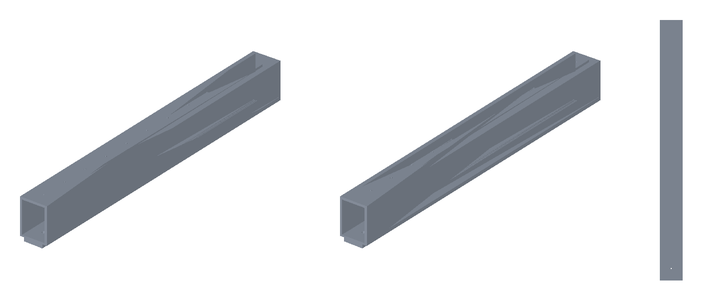
frame_longeron_L
60 × 680 × 88 mm · 2,16 kg · 13 superfici cilindriche
EN AW-6082 T6, tubi 80 × 60 × 4
saldato TIG, distensionato, fresato su pad, sedi guide Y e appoggi flange dei montanti
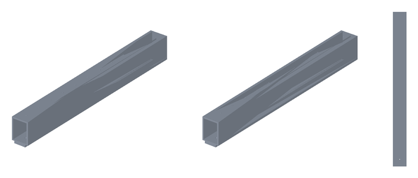
frame_longeron_R
60 × 680 × 88 mm · 2,16 kg · 13 superfici cilindriche
EN AW-6082 T6, tubi 80 × 60 × 4
saldato TIG, distensionato, fresato su pad, sedi guide Y e appoggi flange dei montanti
frame_cross_bf
240 × 50 × 75 mm · 0,50 kg · 2 superfici cilindriche
EN AW-6082 T6, tubi 80 × 60 × 4
saldato TIG, distensionato, fresato su pad, sedi guide Y e appoggi flange dei montanti
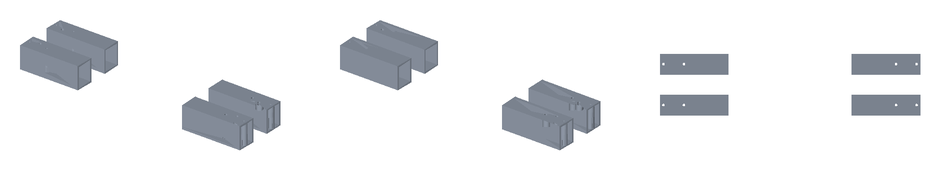
frame_cross_rear
760 × 180 × 75 mm · 2,59 kg · 24 superfici cilindriche
EN AW-6082 T6, tubi 80 × 60 × 4
saldato TIG, distensionato, fresato su pad, sedi guide Y e appoggi flange dei montanti
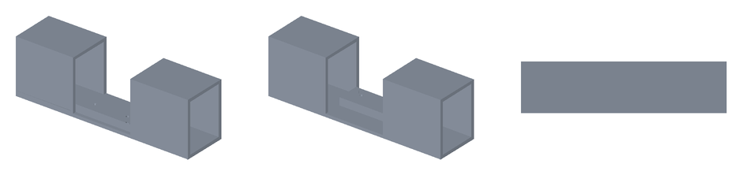
frame_cross_bk
240 × 60 × 75 mm · 0,56 kg · 2 superfici cilindriche
EN AW-6082 T6, tubi 80 × 60 × 4
saldato TIG, distensionato, fresato su pad, sedi guide Y e appoggi flange dei montanti
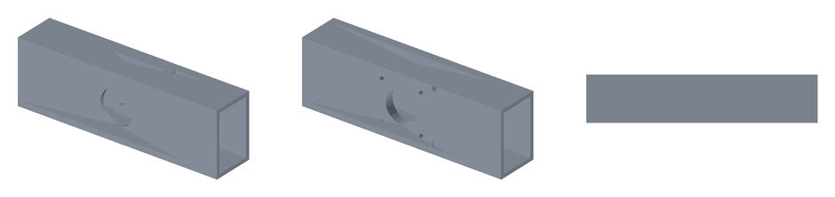
frame_cross_end
240 × 50 × 75 mm · 0,63 kg · 6 superfici cilindriche
EN AW-6082 T6, tubi 80 × 60 × 4
saldato TIG, distensionato, fresato su pad, sedi guide Y e appoggi flange dei montanti
MP-GAN-001 · Trave gantry
1 pezzi · 5,78 kg dal CAD · BOM 6,98 kg · STEP della riga (coordinate HOME) ↓
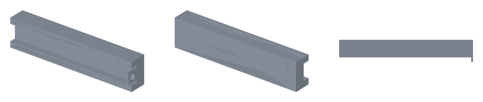
beam
760 × 126 × 170 mm · 5,78 kg · 31 superfici cilindriche
EN AW-6082 T6, scatolato 100 × 170 (faccia 8, pareti 4)
saldato, distensionato, fresato su faccia guide X, canale vite e appoggi staffe lift
MP-GAN-002 · Spalle gantry
3 pezzi · 4,61 kg dal CAD · BOM 8,24 kg · STEP della riga (coordinate HOME) ↓
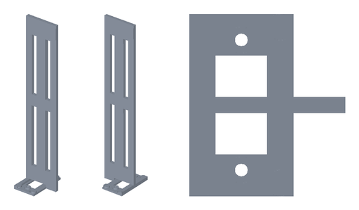
upright_L
120 × 140 × 607 mm · 1,93 kg · 16 superfici cilindriche
EN AW-6082 T651, piastra 12 finestrata + flangia 12 scaricata
fresato; sede guida HGR15 rettificata, fori spine Ø10 H7 alesati
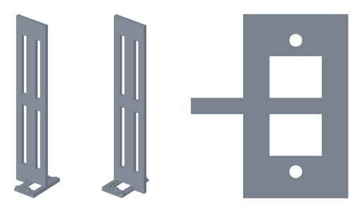
upright_R
120 × 140 × 607 mm · 1,93 kg · 16 superfici cilindriche
EN AW-6082 T651, piastra 12 finestrata + flangia 12 scaricata
fresato; sede guida HGR15 rettificata, fori spine Ø10 H7 alesati
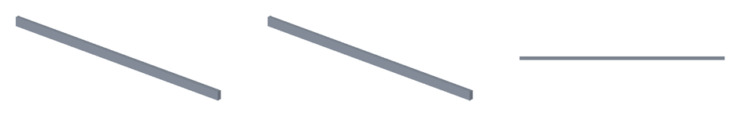
lift_tie
760 × 12 × 30 mm · 0,74 kg · 0 superfici cilindriche
EN AW-6082 T651
fresato; staffe trave a C con faccia pattini 12 mm
MP-Z-001 · Piastra asse Z
1 pezzi · 1,14 kg dal CAD · BOM 1,41 kg · STEP della riga (coordinate HOME) ↓
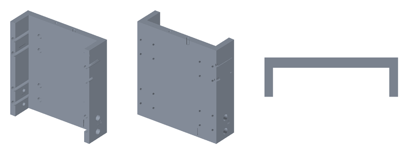
z_slide
160 × 47 × 170 mm · 1,14 kg · 52 superfici cilindriche
EN AW-6082 T651, piastra 12 + ali 10
fresato
MP-XC-001 · Carrello X
1 pezzi · 4,39 kg dal CAD · BOM 5,78 kg · STEP della riga (coordinate HOME) ↓
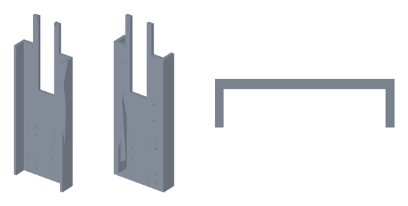
x_carriage
210 × 57 × 622 mm · 4,39 kg · 58 superfici cilindriche
EN AW-6082 T651, piastra 12 + ali 10 + torre
fresato
MP-BRK-001 · Staffe chiocciole, motori e supporti
7 pezzi · 0,88 kg dal CAD · BOM 0,84 kg · STEP della riga (coordinate HOME) ↓
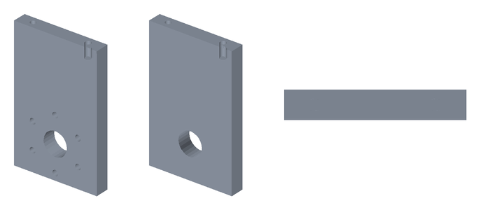
y_nut_bracket
60 × 10 × 95 mm · 0,14 kg · 9 superfici cilindriche
EN AW-6082 T6
fresato
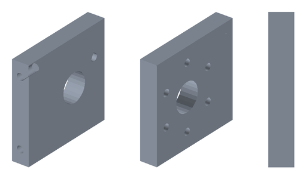
x_nut_bracket
10 × 60 × 56 mm · 0,08 kg · 9 superfici cilindriche
EN AW-6082 T6
fresato
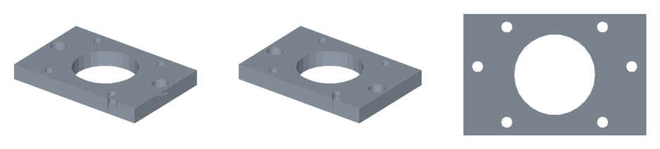
z_motor_bracket
90 × 60 × 10 mm · 0,11 kg · 9 superfici cilindriche
EN AW-6082 T6
fresato
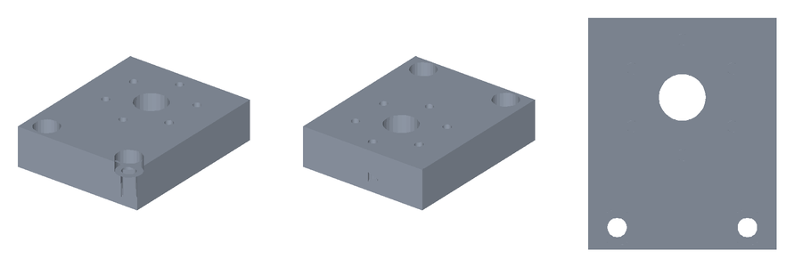
z_nut_tab
52 × 64 × 16 mm · 0,13 kg · 11 superfici cilindriche
EN AW-6082 T6
fresato
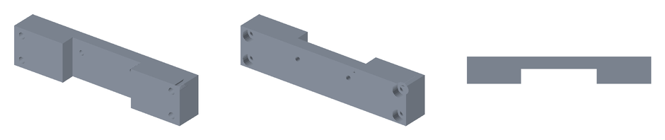
z_bf_bridge
150 × 22 × 32 mm · 0,21 kg · 10 superfici cilindriche
EN AW-6082 T6
fresato
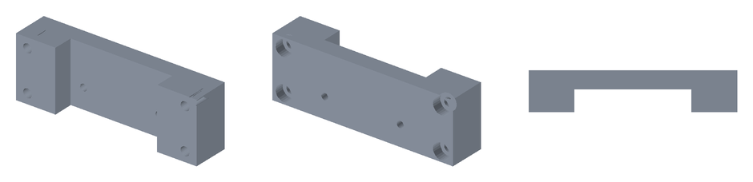
z_bk_bridge
110 × 22 × 37 mm · 0,16 kg · 10 superfici cilindriche
EN AW-6082 T6
fresato
MP-TBL-001 · Tavola Y / tooling plate
1 pezzi · 5,01 kg dal CAD · BOM 5,01 kg · STEP della riga (coordinate HOME) ↓
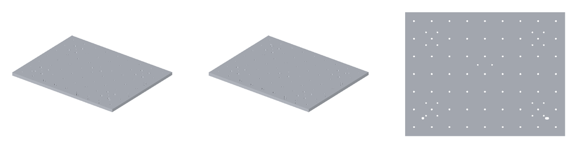
table
450 × 350 × 12 mm · 5,01 kg · 102 superfici cilindriche
EN AW-5083 piastra rettificata 12
fresata piena: sedi inserti M6, boccole R1/R2
MP-GL-LOCK · Locking + references
9 pezzi · 1,96 kg dal CAD · BOM 2,93 kg · STEP della riga (coordinate HOME) ↓

lift_bracket_L
80 × 32 × 170 mm · 0,69 kg · 0 superfici cilindriche
EN AW-6082 T651
fresato; staffe trave a C con faccia pattini 12 mm

lift_nut_tab_L
60 × 56 × 16 mm · 0,14 kg · 1 superfici cilindriche
EN AW-6082 T651
fresato; staffe trave a C con faccia pattini 12 mm

lift_bk_bracket_L
60 × 5 × 35 mm · 0,03 kg · 0 superfici cilindriche
EN AW-6082 T651
fresato; staffe trave a C con faccia pattini 12 mm

lift_lock_L
20 × 28 × 60 mm · 0,09 kg · 0 superfici cilindriche
EN AW-6082 T651
fresato; staffe trave a C con faccia pattini 12 mm
lift_bracket_R
80 × 32 × 170 mm · 0,69 kg · 0 superfici cilindriche
EN AW-6082 T651
fresato; staffe trave a C con faccia pattini 12 mm
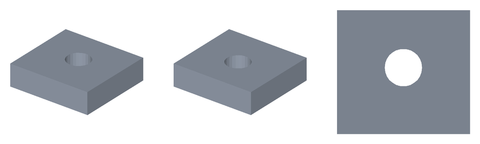
lift_nut_tab_R
60 × 56 × 16 mm · 0,14 kg · 1 superfici cilindriche
EN AW-6082 T651
fresato; staffe trave a C con faccia pattini 12 mm
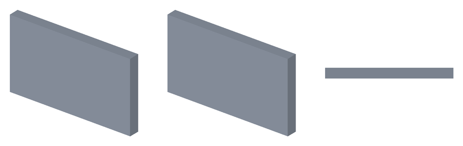
lift_bk_bracket_R
60 × 5 × 35 mm · 0,03 kg · 0 superfici cilindriche
EN AW-6082 T651
fresato; staffe trave a C con faccia pattini 12 mm
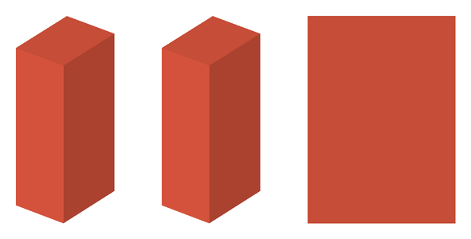
lift_lock_R
20 × 28 × 60 mm · 0,09 kg · 0 superfici cilindriche
EN AW-6082 T651
fresato; staffe trave a C con faccia pattini 12 mm
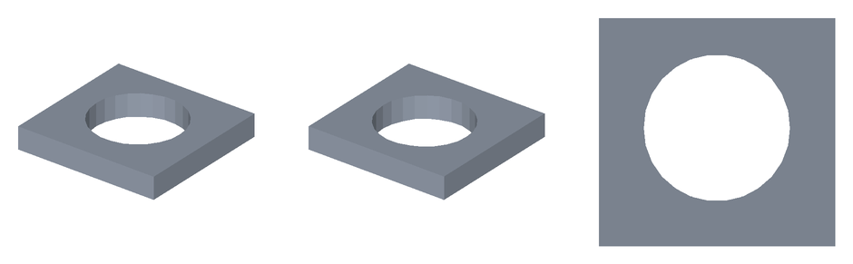
lift_motor_bracket
64 × 62 × 10 mm · 0,07 kg · 1 superfici cilindriche
EN AW-6082 T651
fresato; staffe trave a C con faccia pattini 12 mm
MP-SP-003 · Spindle mount
1 pezzi · 1,07 kg dal CAD · BOM 1,07 kg · STEP della riga (coordinate HOME) ↓
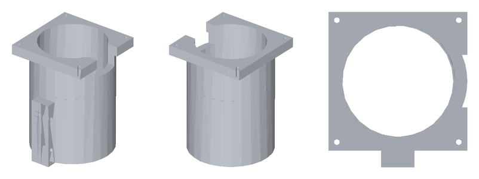
head_mount
100 × 112 × 135 mm · 1,07 kg · 17 superfici cilindriche
EN AW-6082 T6
tornito e fresato; Ø45 H6 alesato, gole O-ring
MC-TD-001 · Master kinematic plate
1 pezzi · 0,96 kg dal CAD · BOM 0,99 kg · STEP della riga (coordinate HOME) ↓
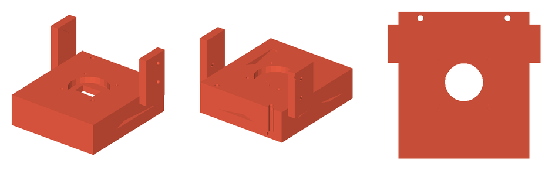
tooldock_master
140 × 135 × 90 mm · 0,96 kg · 35 superfici cilindriche
EN AW-7075 T651
fresato; sedi rulli rettificate, piano di accoppiamento lappato
MC-TD-002 · Base spindle receiver
1 pezzi · 0,45 kg dal CAD · BOM 0,45 kg · STEP della riga (coordinate HOME) ↓
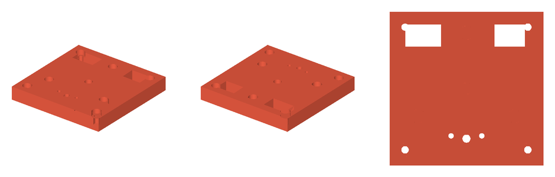
head_receiver
110 × 110 × 15 mm · 0,45 kg · 17 superfici cilindriche
EN AW-7075 T651
fresato; sedi sfere e piano di accoppiamento lappati
MC-TD-003 · Automatic clamp
6 pezzi · 0,40 kg dal CAD · BOM 0,40 kg · STEP della riga (coordinate HOME) ↓
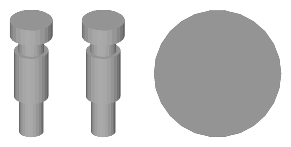
td_pull_stud
15 × 15 × 44 mm · 0,03 kg · 4 superfici cilindriche
42CrMo4 bonificato
tornito e rettificato; comune a tutte le teste (ICD v4)
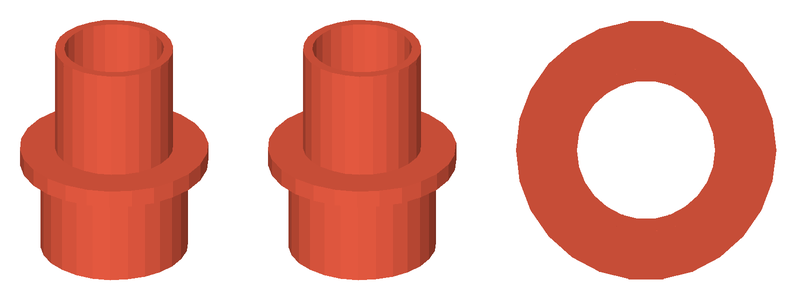
td_clamp_housing
64 × 64 × 76 mm · 0,16 kg · 6 superfici cilindriche
EN AW-7075 T651
tornito
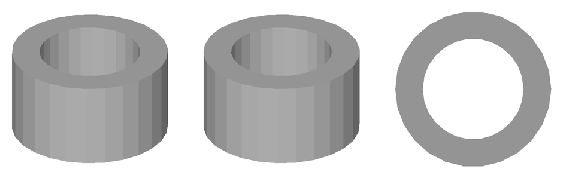
td_clamp_piston
33 × 33 × 18 mm · 0,07 kg · 2 superfici cilindriche
100Cr6 temprato 60 HRC
tornito e rettificato
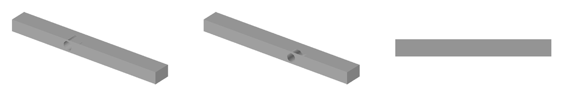
td_release_lever
108 × 12 × 8 mm · 0,08 kg · 1 superfici cilindriche
C45 temprato a induzione sul rullo
fresato
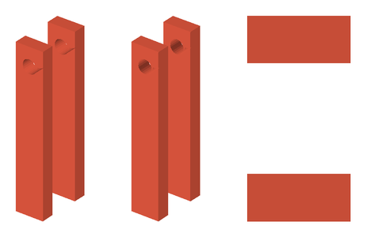
td_lever_post
12 × 24 × 68 mm · 0,02 kg · 2 superfici cilindriche
EN AW-7075 T651
fresato
Accessori (fuori dai totali)
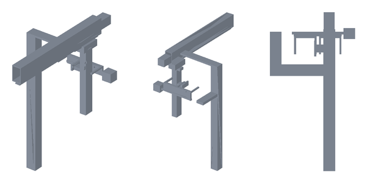
MC-TD-006 · Magazine 2 posti + trasferitore
Layout, non fabbricazione: colonna sulla spalla destra, navetta a 2 posti (passo 130), asse Y del trasferitore sopra la colonna, carro Z, braccio X e forcella fino al dock a X 440; camma di sgancio 3:1 (D016). Guide e motori TARGET.
445 × 830 × 963 mm · massa n.d. (solidi di layout)
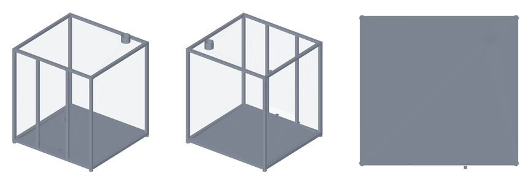
MP-ENC-001 · Cabina
Telaio 30 × 30 con piedi propri, agganciato al basamento e mai al ponte (D025); pannelli PC 4 mm, porta con interlock, vasca trucioli sotto i piedi della macchina, aspirazione Ø100; racchiude anche magazine e trasferitore.
1.120 × 1.081 × 1.282 mm · 48,4 kg
Viteria e minuteria
Compilata dalle lavorazioni (riga BOM MC-HW-001). Lunghezze MULE, da verificare in assieme reale.
| Norma | Articolo | Q.tà | Dove |
|---|---|---|---|
| ISO 4762 | M4×16 | 6 | flangia chiocciola SFU1204 → staffa |
| ISO 4762 | M4×16 | 16 | pattini Z |
| ISO 4762 | M4×20 | 12 | rotaie Z → carrello X |
| ISO 4762 | M5×12 | 4 | flangia cartuccia clamp → master |
| ISO 4762 | M5×12 | 16 | pattini Y |
| ISO 4762 | M5×12 | 22 | rotaie Y → longheroni (filetto nel pad) |
| ISO 4762 | M5×16 | 12 | flangia chiocciola SFU1605 → staffa |
| ISO 4762 | M5×16 | 16 | pattini X |
| ISO 4762 | M5×20 | 2 | BF10 Z → piastra ponte |
| ISO 4762 | M5×20 | 2 | BK10 Z → piastra ponte |
| ISO 4762 | M5×20 | 4 | motore X (con dado) |
| ISO 4762 | M5×20 | 4 | motore Y (con dado) |
| ISO 4762 | M5×20 | 4 | motore Z (con dado) |
| ISO 4762 | M5×20 | 22 | rotaie X → trave |
| ISO 4762 | M5×20 | 2 | staffa chiocciola Y → tavola (dall'alto) |
| ISO 4762 | M5×25 | 2 | collare del mount spindle (orecchia) |
| ISO 4762 | M5×25 | 8 | piastra ponte Z → carrello |
| ISO 4762 | M5×25 | 4 | receiver → mount spindle |
| ISO 4762 | M5×25 | 2 | staffa chiocciola X → carrello (dal fronte) |
| ISO 4762 | M5×25 | 2 | staffa motore Z → torre carrello |
| ISO 4762 | M5×30 | 2 | piastrina chiocciola Z → slitta |
| ISO 4762 | M5×40 | 2 | BF12 X → spessori → trave |
| ISO 4762 | M5×40 | 2 | BK12 X → spessori → trave |
| ISO 4762 | M5×45 | 2 | BF12 Y → traversa |
| ISO 4762 | M5×45 | 2 | BK12 Y → traversa |
| ISO 4762 | M5×50 | 2 | master → bordo inferiore slitta (dal piano di accoppiamento) |
| ISO 4762 | M6×20 | 4 | sella master → ala slitta |
| ISO 4762 | M8×80 | 4 | spalla L → basamento, dal basso attraverso la traversa (ICD §5) |
| ISO 4762 | M8×80 | 4 | spalla R → basamento, dal basso attraverso la traversa (ICD §5) |
| O-ring NBR 70 | O-ring 8 × 1,5 / 6 × 1,5 | 3 | porte aria/fluido ToolDock |
| boccola di riferimento temprata | Ø8 H7 × 10 | 2 | tavola R1 / R2 |
| cuscinetto rullo inseguitore | 625-2Z | 1 | leva di sgancio |
| fissaggio connettore | secondo scheda | 2 | connettore data (metà testa e metà macchina) |
| fissaggio connettore | secondo scheda | 2 | connettore hybrid (metà testa e metà macchina) |
| inserto filettato acciaio (filetto utile 9 mm) | M6 × 12 | 63 | tavola (ICD §4) |
| molla a tazza DIN 2093 B (pacco in serie-parallelo, ≥ 1,6 kN TARGET) | 31,5 × 16,3 × 1,75 | 8 | clamp ToolDock |
| piede antivibrante M10 | M10 | 4 | piedi telaio |
| sfera 100Cr6 | Ø10 G10 | 3 | receiver (incollata / piantata) |
| sfera 100Cr6 | Ø6 G10 | 6 | clamp a sfere |
| spina ISO 8734 | Ø10 m6×24 | 2 | spalla L → basamento (ICD §5) |
| spina ISO 8734 | Ø10 m6×24 | 2 | spalla R → basamento (ICD §5) |
| spina ISO 8734 | Ø6 m6×20 | 2 | master ↔ slitta (riferimento) |
| spina ISO 8734 (fulcro) | Ø6 × 30 | 1 | leva di sgancio |
| spina rettificata DIN 6325 (rullo) | Ø8 × 12 | 6 | master ToolDock |
Rigenerare
python tools/cad/standard_parts.py --base pro (poi standard_assembly.py per assieme, controlli e pagina CAD). STEP in coordinate locali: angolo minimo del pezzo nell'origine; lo STEP di ogni riga BOM tiene le coordinate macchina in HOME.